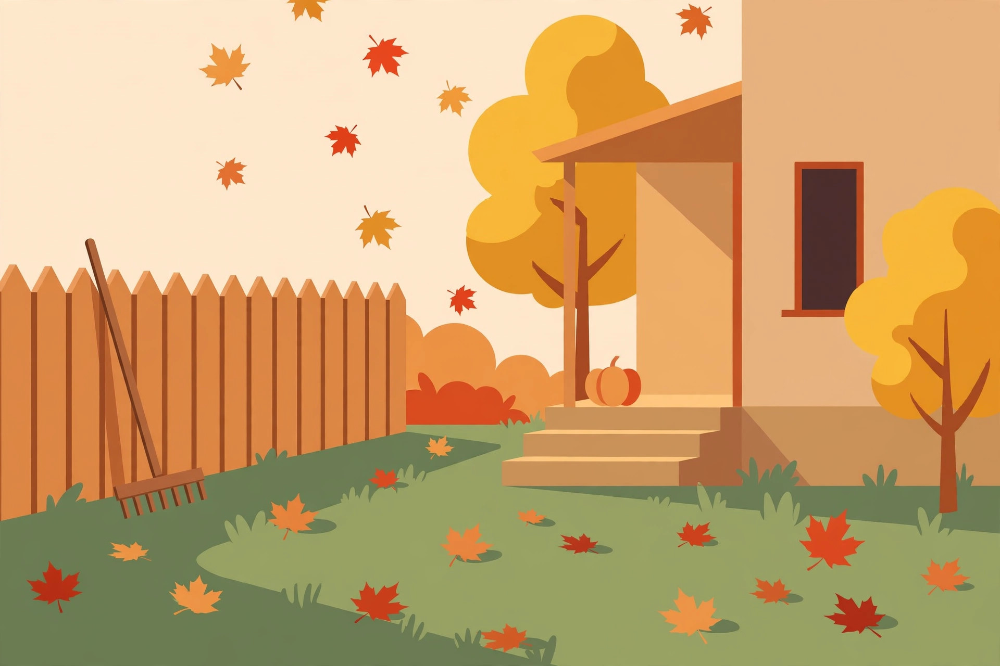
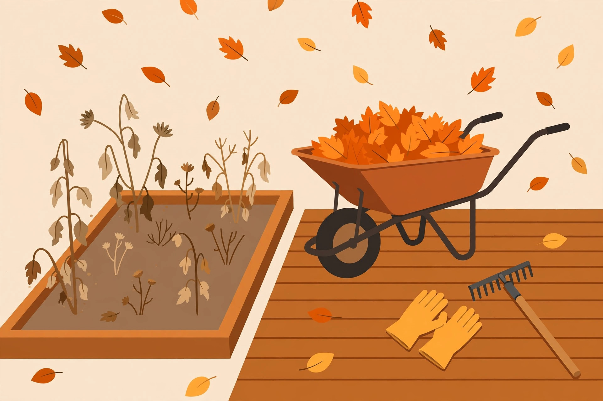
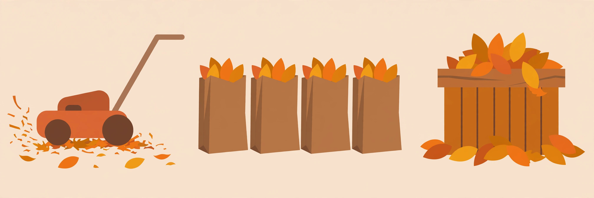
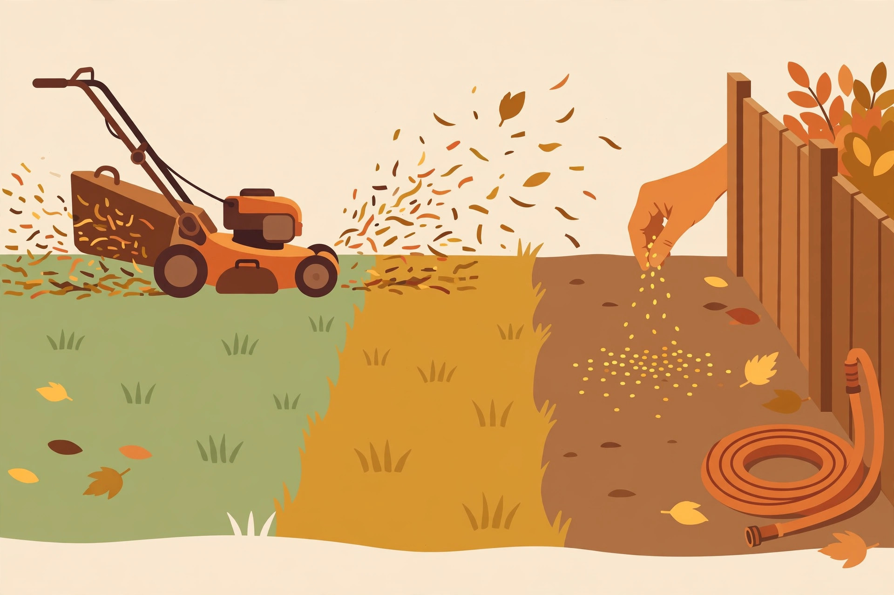
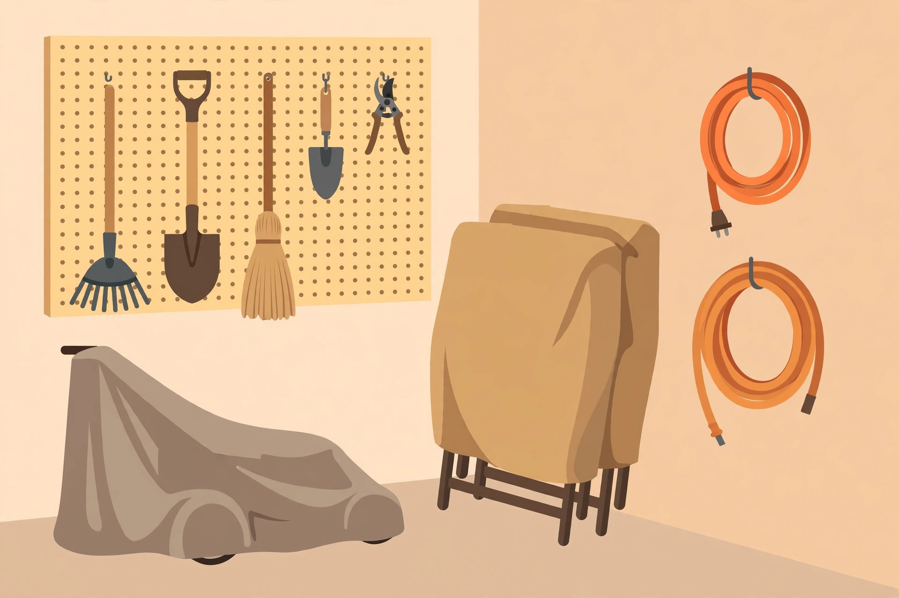
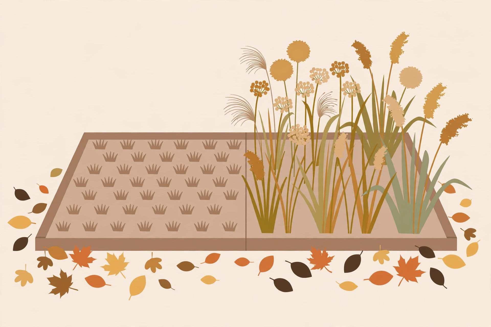
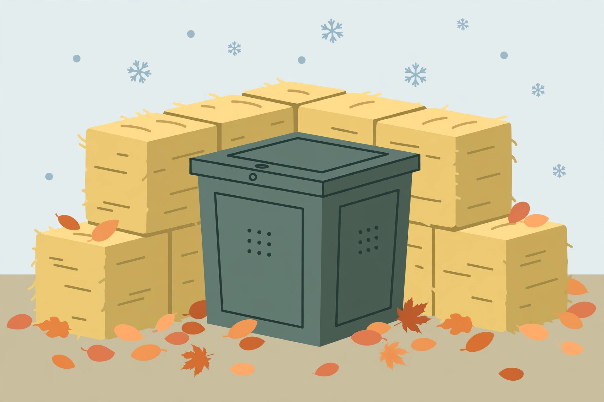
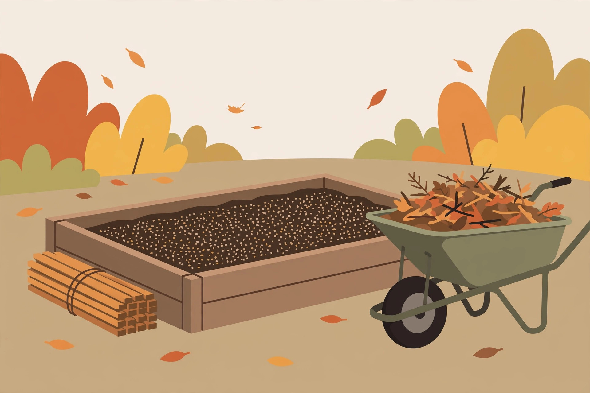

Fall lawn aerating and overseeding: timing, rates, and the full procedure
Core aerate, then seed at the verified rate for your grass species — timing counted back from the first freeze, not picked off a calendar.
Short-season yard guides — leaves, gutters, lawn, and tools before the freeze

The window is short — a few weekends between leaf drop and the first freeze. Eleven practical guides to clear the leaves, clean the gutters safely, winterize the lawn, put the beds to sleep, and store your tools right.
Start the reset →Core aerate, then seed at the verified rate for your grass species — timing counted back from the first freeze, not picked off a calendar.
Sunscald, winter burn, and rodents need three different protections — trunk wrap, a staked burlap screen, and a mesh guard — plus a never-wrap list.
Buds removed, tender growth triggered, disease windows opened — the three mechanisms behind fall pruning damage, and a table that sorts any plant.
Fall yard work isn't complicated, but timing matters. These guides keep it simple: what to do first, what can wait, and when to hire out instead of climbing a ladder yourself.

The window is short — leaves, beds, patios, and furniture. How to prioritize the work so the freeze doesn't beat you.

Mulch-mowing, bagging, composting, and curb programs — pick the method that fits your trees and your weekends.
Ladder safety first — and the honest signs it's time to hire it out. What clean gutters prevent, and how to keep them clear.

The final cut, overseeding basics, and a deep watering before the freeze — the three moves that set up spring grass.

Clean, sharpen, winterize the mower, drain the hoses, and cover the furniture — so everything works again in spring.

Wait for frost, not the calendar — the disease-risk list to cut back, the wildlife-value list to leave standing, and the 3-question rule.

Two honest winter strategies plus the fall harvest sequence most guides skip — and the answer to turn vs. don't turn.

The full shutdown in the right order — clear, sort, feed, and protect the soil with a cover crop, mulch, or compost topdress.